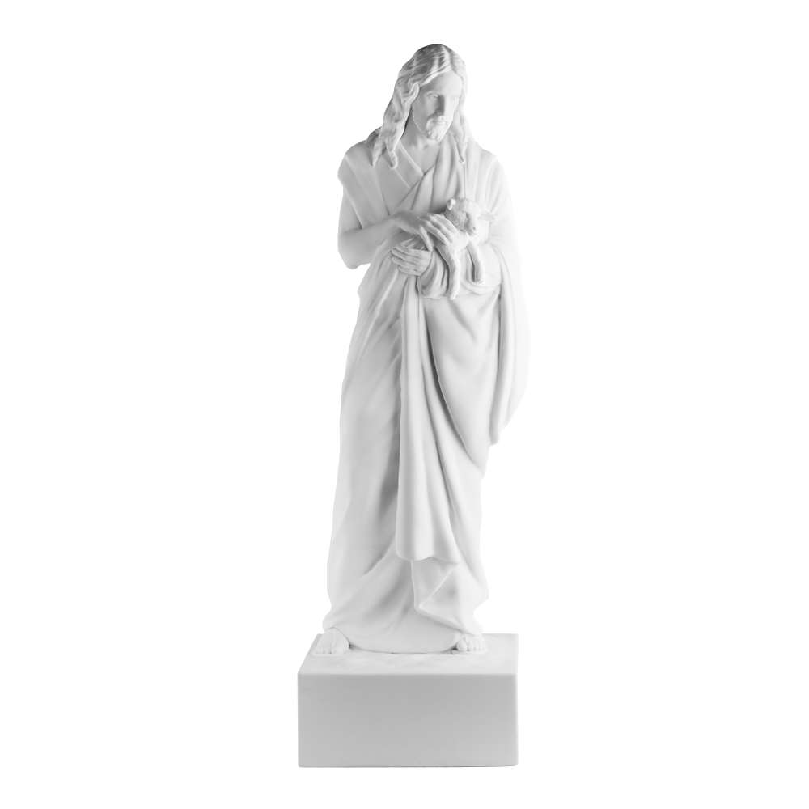
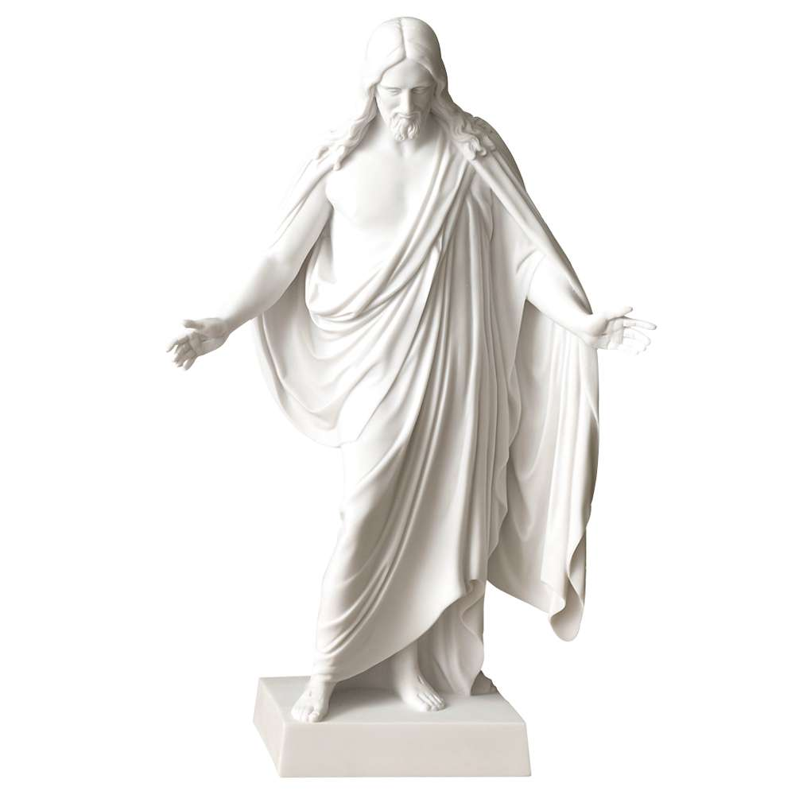

Statues
Statues provide a wonderful way to bring the spirit into your home. They can inspire faith, strength, and provide meaningful symbolism. Deseret book statues provide a variety of gospel depictions, all designed to uplist and inspire.
Available Options
Deseret Book carries a variety of statue types, the most common being the depiction of the Christus. Among the most popular are statues of Joseph and Emma Smith, missionaries, temples, and vases. These statues are made from many different materials, including, but not limited to: cultured marble resin, cold cast bronze, porcelain, resin, and wood.
Key Features
- High quality craftsmanship with attention to detail
- Available in multiple sizes and materials
- Perfect for home decor, offices, and gifts
- Symbolic designs that reflect faith and devotion
Gallery
Below are a few examples of our favorite statues!

